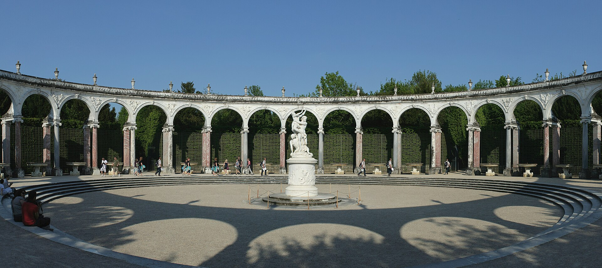

Bosquet de la Colonnade à Versailles par Jules Hardouin-Mansart (1685)
Groupe sculpté de François Girardon: l'Enlèvement de Proserpine par Pluton
Listen to 'Gardener's daughter' in English
|
|
Note :
« La Fille du Jardinier est l’un de ces poèmes qui se comportent
comme un cryptogramme : il ne “parle” pas d’une seule tradition,
mais de plusieurs à la fois, chacune à demi enfouie, chacune
réfractée à travers la métamorphose, la cécité, la nuit,
l’obéissance et la transfiguration végétale.
1. Mystères grecs et hellénistiques
Certains mots des strophes d’ouverture évoquent l’initié d’Éleusis
ou de Samothrace :
• cécité — tâtonnement — révélation
• corridors — obscurité — graine — naissance
• obéissance — maîtrise
Le monologue du jardinier ressemble à celui d’un hiérophante
expliquant le secret de la germination, la « nuit plus rebelle »
étant la nuit mystique de Perséphone, la graine qui mûrit dans
l’obscurité.
2. Alchimie hermétique
Le jardinier qui « remonte le cours » jusqu’au germe est une figure
hermétique évoquant les trois étapes de l’Œuvre :
• nigredo, mélanosis, œuvre au noir (cécité, chaos)
• albedo, leukosis, œuvre au blanc (obéissance, purification)
• rubedo, iosis, œuvre au rouge (fleur, étincelle, foudre)
L’« étincelle obscure » est la scintilla, la particule divine
cachée.
3. Poésie soufie et mystique persane
La métamorphose du jardin est une inversion qui constitue l’une des
plus anciennes métaphores de la poésie soufie et de la mystique
persane.
Des poètes tels que Rūmī, Attar et Hafez utilisent le jardin comme
symbole de l’âme, et le jardinier comme figure du prêtre ou du
fidèle en quêtede Dieu.
La ligne « le jour où le jardinier deviendra le jardin » évoque :
• l’anéantissement du moi (fanā’)
• la subsistance en Dieu (baqā’)
• le chercheur devenant le cherché
La métamorphose végétale — herbe, fruit, calice, fleur — est
profondément persane.
4. Le poème comme allégorie de la création artistique
C’est peut-être l’allusion la plus profonde.
• Cécité — l’artiste avant la mise en forme de son oeuvre
• Nuit — l’inconscient
• Graine — l’idée
• Obéissance — la discipline
• Fleur — l’œuvre
• Jardinier — le créateur
• Jardin — la création
• « Pour avoir obéi, j’ai dominé ma loi » — le paradoxe de l’art
Cela rejoint Rilke, Trakl, Saint‑Pol‑Roux, Claudel.
*********
5. L'IA propose d'autres rapprochements qui sont moins convaincants:
Mystiques médiévales (Hildegarde de Bingen et Hadewijch d’Anvers,
Saint Jean de la Croix) ou, plus près de nous, la philosophie
mystique de Simone Weil;
La tradition européenne de la noyade réciproque : l’amant et
l’aimée s’engloutissant l’un l’autre évoque Orphée et Eurydice
et la fusion des amants dans la mort, le « chemin liant l’astre à
la terre » comme lien tragique rappelle Tristan et Iseut ou même,
Le mythe proche‑oriental (sumérien) d'Inanna et Dumuzi qui convoque
descente, noyade, renaissance végétale.
En conclusion: ce dont le poème “traite”:
C’est une allégorie de l’initiation, de la création et de
la métamorphose, puisant simultanément dans :
• les cultes grecs des mystères
• l’alchimie hermétique
• l’anéantissement soufi
• la métaphysique végétale des auteurs symbolistes.
Le poème est un PALIMPSESTE DES TRADITIONS D’INITIATION, toutes
réfractées à travers la MÉTAPHORE DU JARDIN — symbole primordial de
création, d’ordre et de dissolution.
Ma propre remarque :
Dans la bibliothèque tentaculaire de Michel Galiana, toutes les
sources littéraires et culturelles mentionnées par l’IA sont
effectivement représentées. En particulier, les ouvrages consacrés
au soufisme y sont très nombreux. On peut donc supposer que c’est
dans cette direction qu’il faut principalement tourner son
attention, si l’on souhaite « interpréter » cette belle poésie.
Pourquoi la FILLE du jardinier?
J'ai objecté : votre explication est très ingénieuse, mais elle
ne rend pas compte du titre choisi par Galiana : « La Fille du
jardinier », et non « L'Amante du jardinier ». Qu'en pensez-vous?
Instantanément, ou presque, l'IA a corrigé sa copie;
Note érudite : Pourquoi le titre "La Fille du Jardinier" invalide
les lectures romantiques
Le titre du poème de Michel Galiana joue un rôle herméneutique
décisif. En désignant la locutrice comme la fille du jardinier,
plutôt que comme l’amante du jardinier, Galiana oriente
explicitement l’interprétation loin des cadres romantiques —
érotiques ou tragiques — que l’imagerie du poème pourrait autrement
évoquer. La fille n’est pas la partenaire d’un drame passionnel
réciproque ; elle est une héritière, un disciple et, en fin de
compte, un successeur. Cette désignation filiale établit une
relation verticale et générationnelle plutôt qu’une relation
horizontale et amoureuse.
Dans ce cadre, le long monologue du jardinier ne se lit pas comme la
confession d’un amant, mais comme la TRANSMISSION d’un art, une
métaphysique de la création passant du maître à l’apprenti. La
métamorphose de la fille — mauvaise herbe, sève, calice, fleur —
devient ainsi le processus par lequel elle assimile, intériorise et
finalement surpasse l’art du jardinier.
Sa déclaration finale: « Pour avoir obéi, j’ai dominé ma loi »,
ne relève pas du paradoxe de la soumission érotique, mais du paradoxe
classique de l’initiation : la maîtrise acquise par l’obéissance.
Les images finales du poème — noyade, fusion, lien cosmique —
peuvent rappeler superficiellement le motif européen des amants qui
s’engloutissent l’un l’autre (Orphée et Eurydice, Tristan et
Iseut). Pourtant, dans le contexte établi par le titre, ces images
ne signifient pas une dissolution romantique, mais l’effacement du
maître au sein du disciple : le jardinier disparaît et se mue en
jardin au moment même où la fille en devient le principe animateur.
Le « chemin reliant l’étoile à la terre » n’est pas un lien
tragique entre amants, mais l’axe de transmission entre générations
de créateurs.
En résumé, le titre invalide les lectures romantiques car il définit
la relation fondamentale du poème comme étant filiale et
initiatique, et non érotique. La fille est l’ultime création du
jardinier, sa métamorphose constitue l’accomplissement d’une
lignée — ce n’est pas une histoire d’amour.
|
"La Fille du Jardinier" is one of those poems that behaves like
a cipher: it is not “about” one tradition, but about several
at once, each half-buried, each refracted through metamorphosis,
blindness, night, obedience, and vegetal transfiguration.
1. Greek and Hellenistic Mysteries:
Certain words in the opening stanzas evoque the initiate of
Eleusis or Samothrace
• blindness - groping - revelation
• corridors - darkness - seed - birth
• obedience - mastery
The gardener’s monologue resembles the hierophant explaining
the secret of germination, the “night more rebellious” being the
mystical night of Persephone, the seed that ripens in darkness.
2. Hermetic alchemy:
The gardener who “swims up the stream” to the germ is a Hermetic
figure echoing the three steps of the alchemistic work:
• nigredo, melanosis, oeuvre au noir (blindness, chaos)
• albedo, leukosis, oeuvre au blanc (obedience, purification)
• rubedo, iosis, oeuvre au rouge (flower, spark, lightning)
The “dark spark” is the scintilla, the hidden divine particle.
3. Sufi poetry and Persian mysticism:
The garden metamorphosis consists in an inversion which is the
oldest metaphors in Sufi poetry and Persian mysticism.
Figures like Rumi, Attar, and Hafez use the garden as the
soul, and the gardener as the divine or the seeker.
The line “the day the gardener becomes the garden” echoes:
• annihilation of the self (fana’)
• subsistence in the divine (baqa’)
• the seeker becoming the sought
The poem’s vegetal metamorphosis — weed, fruit, calyx, blossom —
is deeply Persian.
4. The Poem as Allegory of Artistic Creation
This is perhaps the deepest allusion.
• Blindness - the artist before form
• Night - the unconscious
• Seed - the idea
• Obedience - discipline
• Flower - the work
• Gardener - creator
• Garden - creation
• “For having obeyed, I mastered my law” - the paradox of art.
This aligns with Rilke, Trakl, Saint Pol Roux, and Claudel.
*********
5. The AI suggests other parallels that are less convincing:
Medieval mystics (Hildegard of Bingen and Hadewijch of Antwerp,
Saint John of the Cross) or, closer to us, the mystical philosophy
of Simone Weil;
The European tradition of reciprocal drowning: the lover and the
beloved engulfing one another evokes Orpheus and Eurydice, and
the fusion of lovers in death — the “path linking the star to the
earth” as tragic bond — recalls Tristan and Iseult, or even
the Near Eastern (Sumerian) myth of Inanna and Dumuzi, which
brings together descent, drowning, and vegetal rebirth.
Synthesis: What the poem is “about”
It is an allegory of initiation, creation, and metamorphosis,
drawing simultaneously on:
• Greek mystery cults
• Hermetic alchemy
• Sufi annihilation
• Symbolist vegetal metaphysics
The poem is a PALIMPSEST OF INITIATION TRADITIONS, all refracted
through the METAPHOR OF THE GARDEN — the primordial symbol of
creation, order, and dissolution.
My own remark:
In Michel Galiana’s sprawling, tentacular library, all the literary
and cultural sources mentioned by the super-clever AI are indeed
represented. In particular, works dealing with Sufism are especially
numerous. One may therefore assume that this is the direction in
which one should primarily turn one’s attention, if one wishes to
“interpret” this beautiful poetry.
Why the Gardener's DAUGHTER?
I objected: Your explanation is very clever but it does not account
for the title chosen by Galiana: "The Gardener's daughter", not
"The Gardener's lover". What do you make of it?
Instantly, or almost so, the AI corrected its work, as follows:
Scholarly Note: Why the Title "La Fille du Jardinier" Invalidates
Romantic Readings
The title of Michel Galiana’s poem plays a decisive hermeneutic
role. By naming the speaker La Fille du Jardinier rather than
L’Amante du Jardinier, Galiana explicitly redirects interpretation
away from the erotic or tragic romantic frameworks that the poem’s
imagery might otherwise evoke. The daughter is not a partner in a
reciprocal drama of passion; she is an heir, a disciple, and
ultimately a successor. This filial designation establishes a
vertical, generational relationship rather than a horizontal,
amorous one.
Within this framework, the gardener’s long monologue reads not as
the confession of a lover but as the TRANSMISSION of a craft, a
metaphysics of creation passed from master to apprentice. The
daughter’s metamorphosis —weed, sap, calyx, blossom— thus becomes
the process by which she absorbs, internalizes, and finally
surpasses the gardener’s art.
Her final declaration, “Pour avoir obéi, j’ai dominé ma loi,”
is not the paradox of erotic submission but the
classical paradox of initiation: mastery achieved through
obedience.
The poem’s closing images — drowning, fusion, cosmic linkage — may
superficially resemble the European motif of lovers engulfing one
another (Orpheus/Eurydice, Tristan/Iseult). Yet in the context
established by the title, these images signify not romantic
dissolution but the effacement of the master within the disciple,
the gardener disappearing into the garden at the moment the
daughter becomes its animating principle. The “path linking star to
earth” is not a tragic bond between lovers but the axis of
transmission between generations of creators.
In short, the title invalidates romantic readings because it defines
the poem’s fundamental relationship as filial and initiatory, not
erotic. The daughter is the gardener’s final creation, and her
metamorphosis is the consummation of a lineage—
not a love story.
|
|